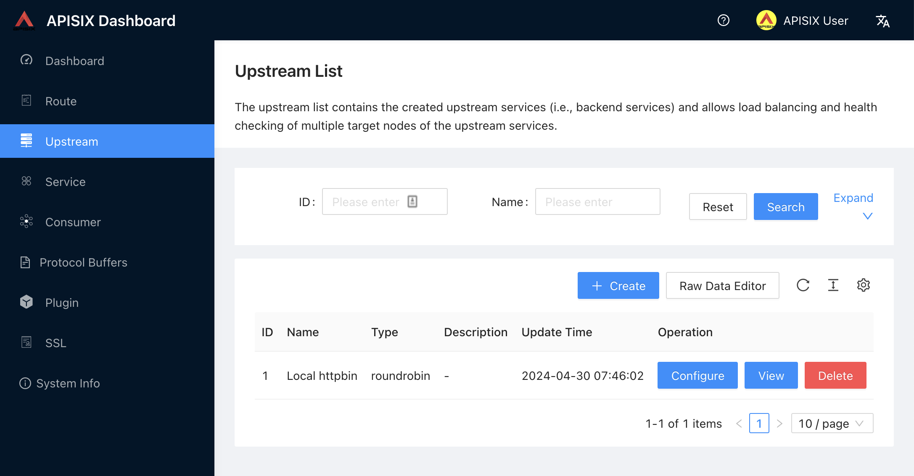

Welcome to this workshop on Apache APISIX! We will show here a couple of APISIX’s nifty features that can help your information system cope with the challenges introduced by APIs:
-
Routing your calls to an
Upstream -
Available abstractions:
Route,Upstream,Consumer, andPlugin -
The Apache APISIX dashboard
-
Configuring APISIX with the dashboard
-
Configuring APISIX with the command-line
-
Monitoring APISIX
-
Introduction to plugin development in Lua
The workshop is designed to be self-driven, but if at any point, you need help, just ask the instructor.
|
Credits
The workshop was initially designed by Bobur Umurzukov with my help. |
Overview

This section explains the context of the workshop. If you prefer, you can directly skip to the hands-on part.
Apache APISIX is an API Gateway steered by the Apache Foundation.
When you expose your services to the outside world, a lot of bad things can happen. For instance, a malicious actor could try to access your services without permission. Or they could try to access your services with invalid data. Or they could try to overload your services with too many requests.
You need to protect your services. However, it doesn’t make any sense to let each developer team handle these requirements on each service. The age-old solution is to hide your services behind a reverse proxy: the reverse proxy is the single point of entry to your information system and protects your services. nginx is a solid and mature reverse-proxy.
Because they were designed before APIs, reverse proxies have a big issue: they don’t differentiate between clients. For example, to protect agains DDoS attacks, they can limit the number of requests for all clients. Some may even allow to configure different limits for different IP addresses (or ranges). However, API providers probably offer different quotas at different prices. A single customer may want to subscribe to two different offers, for two different departments with different requirements - and different budgets.
That’s where API Gateways enter the field. An API Gateway is a reverse proxy "on steroids". It should do everything a reverse proxy does, and more, especially in the context of APIs.
1. Preparing for the workshop
-
This workshops is largely based on Docker Compose v3. You need a way to run Docker and Docker Compose files. Docker Desktop works. If you want to use something else, please feel free to do so but if something doesn’t work because of it, know that it decreases your chances that the instructor can help you with it.
-
We use the curl command for API testing. You can also use other tools, such as Postman or similar.
The workshop is hosted on a GitHub repository.
At the root of the repository is a docker-compose.yml file that defines the infrastructure.
Clone the repository:
git clone https://github.com/nfrankel/apisix-workshop.gitSwitch the current directory to the apisix-workshop path.
cd apisix-workshopRun the docker compose command to start the infrastructure:
docker compose upOnce everything is started, we can run a simple curl command to check if APISIX is running.
curl http://localhost:9180/apisix/admin/routesDon’t worry about the command for now. It should return something similar to:
{"list":[],"total":0}|
Be mindful of keeping APISIX secure
The Admin API, e.g., the command to list all routes, is normally secured by an API key. In the context of this workshop, this security feature has been disabled to avoid extra typing. You should never ever use this setting in a production environement! Moreover, you should change the default API key before your first deployment.
|
2. First steps
In this section, we will create the most basic object in APISIX, the Route.
When Apache APISIX receives a request matching the Route parameters, it forwards it to the configured service.
2.1. Dynamic configuration vs. static configuration
|
Configuration or configuration?
In the context of APISIX, configuration can mean two things: configuration of APISIX itself or configuration of its routing rules. The workshop has taken care of the former, so you can learn about the latter. |
Apache APISIX offers two configuration models. By default, it uses a dynamic one: to configure routing rules, you send HTTP requests to the Admin API. Another option is to use static configuration based on a YAML file. It’s the way for GitOps-based organizations.
In this workshop, we will focus on dynamic configuration, i.e., HTTP calls.
2.2. Our first Route
In this section, we will create our first Route.
The Docker Compose file defines an httpbin service so you don’t need Internet access.
The goal is to create a Route that forwards requests to the httpbin service, in particular:
curl localhost:9080/anythingRead the documentation and create the Route for the above requirement.
If you cannot proceed further or when you are finished, reveal the hint:
See the solution
curl http://localhost:9180/apisix/admin/routes/1 -X PUT -d ' (1)(2)(3)
{
"uri": "/anything*", (4)
"upstream": { (5)
"nodes": {
"httpbin:80": 1
}
}
}'| 1 | The /apisix/admin/routes endpoint manages Route objects. |
| 2 | Because configuration is a highly critical feature, we need to authenticate via an API key. Here, we use the default one. It’s highly advised to generate your own, and regularly change it. |
| 3 | APISIX can match on several parameters: host, HTTP method(s), path, and client IP addresses. Only the path is required. If methods are not specified, it matches all methods. |
| 4 | Notice the star character:
every URI starting with /anything/ matches the Route. |
| 5 | Upstream defined embedded in the Route.
An Upstream references a cluster of nodes, which you can load balance across, depending on an algorithm.
The default algorithm is round robbin.
Here, we have a single Upstream. |
At this point, we can check whether the configuration works:
curl http://localhost:9080/anythingAstute readers might have noticed that the Admin API runs on port 9180 while the Gateway operates on port 9080.
It allows to expose the latter to the outside world while keeping the former private for security reasons.
2.3. Create an Upstream
In the previous section, we created a Route with an embedded Upstream.
The problem with this approach is that you need to define the same Upstream in all the Route objects that use it.
APISIX offers a better way to manage this: the Upstream object.
We can create an Upstream once and reference it throughout multiple Route objects.
The Apache APISIX API is consistent:
the API for Upstream is similar to the API for Route.
With the help of the documentation and the command used to create the Route above, create an Upstream with the following properties:
-
ID:
1 -
Single node
-
The node points to
httpbin:80
See the command
curl http://localhost:9180/apisix/admin/upstreams/1 -X PUT -d '
{
"nodes": {
"httpbin:80": 1
}
}'You can configure the Upstream with additional properties like health check, retries, retry timeout or load-balancing to multiple systems.
2.4. Bind the Route to the Upstream
In the previous section, we created an Upstream that referenced our backend service.
It can be referenced by upstream_id in a Route.
Create a new Route that references it with the help of the documentation.
See the command
curl http://localhost:9180/apisix/admin/routes/1 -X PUT -d ' (1)
{
"uri": "/anything*", (2)
"upstream_id": 1 (3)
}'| 1 | We use the same id 1 as above, so we are replacing the previous Route with this one |
| 2 | Match the /anything* path as before |
| 3 | Forwards to the Upstream defined above |
Let’s test:
curl localhost:9080/anything/goesIt should return the expected data from the configured Upstream.
Upstream objects are a powerful abstraction in Apache APISIX.
They allow to define a single object across multiple Route objects so that there is only a single Upstream that needs to be maintained.
3. The APISIX Dashboard
Along with the Admin API, Apache APISIX offers a Dashboard. The Apache APISIX Dashboard is designed to make it as easy as possible for users to configure Apache APISIX via a GUI. You can find more information about the APISIX Dashboard in the user guide.
If you have time, the Getting started with Apache APISIX Dashboard video tutorial is a good introduction to the dashboard:
-
The Dashboard uses the Admin API
The Dashboard sends Admin API requests behind the scenes. You can verify this claim by interacting with the dashboard with your favorite’s browser tools enabled. Hence, whatever we do with the dashboard, we can do with the Admin API.
The reverse is not true: the Dashboard doesn’t cover every API call available.
Remember that though the backend service could implement it, it’s more efficient to factor this feature in the API Gateway than to implement it in every service. For this reason, we are going to add authentication to the Route.
3.1. Display the existing objects
So far, we created a Route and an Upstream via the CLI .
We can see the result of our work on the dashboard.
It’s accessible at http://localhost:9000/.
The credentials are admin/admin by default.

After logging, go to Route in the navigation bar on the left side.
In the Route list, we can see the Route we created previously.
Next, navigate to Upstream.
Likewise, the dashboard displays our Upstream.

3.2. Update existing objects
The Dashboard allows not only viewing existing objects but also creating, updating and deleting object.
At the moment, neither the Route nor the Upstream have a user-friendly name.
We will use two different methods to add one:
via the Configure wizard and directly via the JSON object.
3.2.1. Updating via the Configure wizard
-
Go to the
Upstreamscreen -
Click the Configure button for the single
Upstreamdisplayed -
In the opening screen, set a name, e.g., "Local httpbin"
 Figure 4. Upstream details on the APISIX Dashboard
Figure 4. Upstream details on the APISIX Dashboard -
Click Next, then Submit. The list now displays the
Upstreamwith its updated name.Figure 5. Updated Upstream list on the APISIX Dashboard
3.2.2. Updating via JSON
As an alternative to the wizard, we can directly update an object’s JSON configuration.
-
Navigate to the
Routescreen -
On the right side of the
Routeobject, locate the button Figure 6. Routes List on the APISIX Dashboard
Figure 6. Routes List on the APISIX Dashboard -
On the opening screen, change the name to something more descriptive, e.g, "Anything"
Figure 7. Route Raw Configuration Editor on the APISIX Dashboard -
In the list, we can now see the updated
RoutenameFigure 8. Updated Routes list on the APISIX Dashboard
This is but a taste of the Apache APISIX Dasboard. We continue the workshop with the CLI.
4. Authenticating client requests
The Route we have created above is public.
Thus, anyone can access the underlying Upstream as long as they know the endpoint Apache APISIX exposes to the outside world.
It’s not safe, as a malicious actor could use this endpoint.
In this section, we are going to set up authentication for requests to our local httpbin Upstream.
4.1. Create a Consumer
Authentication is tied to an identity; Apache APISIX represents an identity as a Consumer object.
With the help of the Admin API, list all existing Consumer objects; there should be none.
See the command
curl http://localhost:9180/apisix/admin/consumersNow, let’s create a Consumer object with the name johndoe.
See the command
curl http://localhost:9180/apisix/admin/consumers -X PUT -d '
{
"username": "johndoe"
}'Now, list the Consumer objects again.
The result should be something like this (formatted for ease of reading):
{
"list": [
{
"key": "/apisix/consumers/johndoe",
"value": {
"update_time": 1714465186,
"create_time": 1714461458,
"username": "johndoe"
},
"modifiedIndex": 58,
"createdIndex": 38
}
],
"total": 1
}4.2. Add a Plugin to a Route object
So far, we have used several APISIX abstractions: Route, Upstream, and Consumer.
We need one more to go further.
Apache APISIX builds upon a plugin-based architecture:
every functionality such as rate limiting, authentication, etc. is implemented via a Plugin object.
APISIX comes with a large set of built-in plugins for common capabilities, but you can create your own in case you can’t find one that fits your requirements.
A couple of existing plugins implement authentication.
To keep things simple, we are going to use the simplest one, the key-auth plugin.
With this plugin, we can authenticate requests based on either an HTTP header or a query parameter.
First, we need to add the Plugin to the Route.
Use the Admin API to enable the key-auth plugin for the Route we created earlier.
See the command
curl http://localhost:9180/apisix/admin/routes/1 -X PATCH -d ' (1)(2)(3)
{
"plugins": {
"key-auth": {} (4)
}
}'| 1 | Use the /routes endpoints |
| 2 | Work on the Route with ID 1 |
| 3 | Patch the exising Route |
| 4 | Set the key-auth plugin with no additional configuration |
At this point, we control who can access the /anything endpoint by authenticating requests.
Requests that don’t include a valid API key are rejected with an HTTP 401 status.
Let’s check:
curl -i localhost:9080/anythingBecause we didn’t set the authentication key, Apache APISIX will return a 401 Unauthorized error.
HTTP/1.1 401 Unauthorized
Date: Tue, 30 Apr 2024 08:38:38 GMT
Content-Type: text/plain; charset=utf-8
Transfer-Encoding: chunked
Connection: keep-alive
Server: APISIX/3.9.0
{"message":"Missing API key found in request"}To authenticate, we need to set the key on the Consumer object.
With the help of the Admin API, update johndoe with an API key, e.g., john.
See the command
curl http://localhost:9180/apisix/admin/consumers/johndoe -X PUT -d ' (1)(2)
{
"username": "johndoe", (2)
"plugins": {
"key-auth": {
"key": "john" (3)
}
}
}'| 1 | Use the /consumers endpoints |
| 2 | The Consumers API doesn’t support patching existing objects.
We need to use PUT and specify which Consumer object to work on |
| 3 | Set the key-auth plugin with no additional configuration |
We can now retry the same request with the authentication key.
curl -i -H 'apikey: john' localhost:9080/anything (1)| 1 | The default header name is apikey.
You can override it in the Plugin configuration. |
We can now successfully access the endpoint!
HTTP/1.1 200 OK
Content-Type: application/json
Content-Length: 334
Connection: keep-alive
Date: Tue, 30 Apr 2024 08:50:12 GMT
Access-Control-Allow-Origin: *
Access-Control-Allow-Credentials: true
Server: APISIX/3.9.0
{
"args": {},
"data": "",
"files": {},
"form": {},
"headers": {
"Accept": "*/*",
"Apikey": "john",
"Host": "localhost:9080",
"User-Agent": "curl/8.4.0",
"X-Forwarded-Host": "localhost"
},
"json": null,
"method": "GET",
"origin": "192.168.65.1",
"url": "http://localhost/anything"
}In this section, we learned about the Consumer and Plugin objects, and how to implement a simple authentication mechanism with the key-auth plugin.
5. Managing quotas
In this section, we are going to describe several ways to set quotas on your APIs.
5.1. Limit Count Plugin
Traffic management is a must-have of any reverse proxy worth their salt. An API Gateway is no exception. Rate limiting is a strategy for limiting network traffic. It puts a cap on how often someone can repeat an action within a specific timeframe – for instance, trying to log into an account.
Apache APISIX offers no less than three plugins to rate limit requests:
-
limit conn: limits the number of concurrent requests
-
limit req: limits the number of requests based on the Leaky Bucket algorithm
-
limit count: limits the number of requests based on a fixed time window
The limit-count plugin is the simplest one and a good candidate for this workshop.
Let’s enable the limit-count plugin on our existing Route.
The requirements are as follow:
-
The limit is at most 1 request per minute
-
If the limit is exceeded, the HTTP status code should be
429and the message should beYou have exceeded your quota, try again later
With the help of the Admin API and the plugin documentation, set the limit-count plugin on the Route with ID 1 with the above parameters.
See the command
curl http://localhost:9180/apisix/admin/routes/1/plugins/limit-count -X PATCH -d ' (1)
{
"count": 1,
"time_window": 60, (2)
"rejected_code": 429, (3)
"rejected_msg": "You''ve exceeded your quota, try again later" (3)
}'| 1 | Path to the new plugin, i.e., /routes/1/plugins/limit-count |
| 2 | The unit is in seconds |
| 3 | Other parameters fulfill the above requirements |
We can try to send a request as above.
curl -H 'apikey: john' localhost:9080/anything
curl -H 'apikey: john' localhost:9080/anythingThe first request should work, but the second one should return a 429 status code.
Notice that the response contains additional headers to help clients understand where they stand:
X-RateLimit-Limit: 1 (1) X-RateLimit-Remaining: 0 (2) X-RateLimit-Reset: 56 (3)
| 1 | The limit we set (per minute) |
| 2 | The remaining number of requests allowed |
| 3 | The time in seconds until the limit resets |
5.2. Using the Dashboard to set the limit
As an alternative to the above, we can use the Dashboard to set the limit-count plugin on the Route.
-
Go to the Dashboard
-
Click on the Route menu item
-
Press Configure on the
Routeyou want to add thePluginto -
In the first screen of the wizard, we need to fill in the name if it’s not already the case
Figure 9. Configure Route wizard - Define API request -
Click Next
-
On the next screen, labeled "Define API Backend Server", we need to select
1in the Upstream field drop-down -
Click Next
-
Finally, on the third screen, the Dashboard presents the list of available plugins
Figure 10. Configure Route wizard - List of available plugins -
Select the Traffic Control menu item on the left inner menu
-
The UI scrolls to show us the available plugins in this category
Figure 11. Configure Route wizard - Traffic control plugins -
Press Enable on the
limit-countplugin-
Switch on the Enable toggle button
-
Set the
countfield to1 -
Set the
time_windowfield to60 -
Set the
rejected_codefield to429 -
Set the
rejected_messagefield toYou have exceeded your quota, try again laterFigure 12. Configure Route wizard - Plugin editor -
Click Submit
-
-
The wizard puts us back on the third step, but the configured plugin should be displayed differently
Configure Route wizard - Plugin enabled
-
Press Next
-
Click Submit to finish the wizard
Figure 13. Configure Route wizard - Success!
5.3. Promoting a Consumer
In the previous section, we set a cap on the number of requests for all consumers.
However, a real-world scenario is to offer different limits at different prices.
For instance, a free tier could offer 100 requests per minute, while a premium tier could offer 1000 requests per minute.
In this section, we are going to create a new Consumer object and set its limit to 5.
Using the Admin API, create a new Consumer object with the following properties:
-
Name:
janedoe -
Key:
jane -
Plugin:
limit-countwith a limit of 5 requests per minute
See the command
curl http://127.0.0.1:9180/apisix/admin/consumers -X PUT -d '
{
"username": "janedoe",
"plugins": {
"key-auth": {
"key": "jane"
},
"limit-count": {
"count": 5,
"time_window": 60,
"rejected_code": 429,
"rejected_msg": "You''ve exceeded your quota, try again later"
}
}
}'To test, run the following script:
for i in {1..6}
do
curl -H 'apikey: jane' localhost:9080/anything
doneThe first five executions return a bunch of JSON from httpbin, but the sixth one should return a 429 status code:
{"error_msg":"Youve exceeded your quota, try again later"}5.4. Consumer groups
Real-world scenarios rarely assign privileges to a specific user but to a group.
Hence, a user gets their privileges transitively by belonging to a group.
It helps tremendously when users moves in to/out from the group.
To model this, Apache APISIX offers an abstraction called a Consumer Group.
In this section, we are going to create a Consumer Group with a high limit and move johndoe and janedoe to it.
First, let’s create a Consumer Group with ID 1 and a limit of 5 requests per minute.
The Admin API is your friend.
See the command
curl http://127.0.0.1:9180/apisix/admin/consumer_groups/doe -X PUT -d '
{
"plugins": {
"limit-count": {
"count": 5,
"time_window": 60,
"rejected_code": 429
}
}
}'Then, remove the limit-count plugin from janedoe with the help of the Admin API and add it to the Consumer Group created.
Also, add johndoe to the Consumer Group.
Note that the API doesn’t offer a PATCH method; you’ll need to replace the whole object with PUT.
See the command
curl http://127.0.0.1:9180/apisix/admin/consumers -X PUT -d '
{
"username": "janedoe",
"plugins": {
"key-auth": {
"key": "jane"
}
},
"group_id": "doe"
}'
curl http://127.0.0.1:9180/apisix/admin/consumers -X PUT -d '
{
"username": "johndoe",
"plugins": {
"key-auth": {
"key": "john"
}
},
"group_id": "doe"
}'We can now test with the follow script:
for i in {1..3}
do
curl -H 'apikey: john' localhost:9080/anything
curl -H 'apikey: jane' localhost:9080/anything
doneAs above, the 6th request should return a 429 status code.
However, the limit is shared between both Consumer objects as they belong to the same Consumer Group.
6. Handling permissions
In the previous sections, we have seen how to set quotas on the number of requests. We can also set permissions to allow/disallow specific users/user groups to access our API. This is the realm of the consumer-restriction plugin.
At the moment, we have a single endpoint.
Anybody can access it, even though it’s limited to one request per minute.
We also have two Consumer objects that belong to the same Consumer Group.
In this section, we are going to limit the access to the endpoint to a single Consumer object, then to the whole Consumer Group.
Read the relevant documentation and limit the acces to the endpoint to johndoe.
See the command
curl http://127.0.0.1:9180/apisix/admin/routes/1/plugins/consumer-restriction -X PATCH -d '
{
"whitelist": [ "johndoe" ]
}'Try to access the endpoint with both Consumer objects:
curl -H 'apikey: john' localhost:9080/anything
curl -H 'apikey: jane' localhost:9080/anythingThe first command should work while the second one should return a 403 status code - the default one.
Now, change the restriction from the Consumer object to the Consumer Group.
Beware, you need to set an additional parameter.
You can find it in the plugin documentation.
See the command
curl http://127.0.0.1:9180/apisix/admin/routes/1/plugins/consumer-restriction -X PATCH -d '
{
"whitelist": [ "johndoe" ]
}'Try again to access the endpoint:
curl -H 'apikey: john' localhost:9080/anything
curl -H 'apikey: jane' localhost:9080/anythingNow, both commands should work because the two Consumer objects belong to the configured Consumer Group.
The consumer-restriction plugin is quite powerful.
You can design your access policy around it.
Here’s a simple example:
curl http://localhost:9180/apisix/admin/routes/1/plugins/consumer-restriction -X PUT -d '
{
"type": "consumer_group_id",
"allowed_by_methods": [
{
"user": "users", (1)
"methods": ["GET"] (1)
},
{
"user": "admins", (2)
"methods": ["GET", "POST", "PUT", "PATCH"] (2)
}
]
}'| 1 | Consumer objects that belong to the users Consumer Group can only GET |
| 2 | Consumer objects that belong to the admins Consumer Group can do pretty much everything |
|
Prefer allowing access than disallowing it
The |
|
Other noteworthy security-related plugins
|
7. Disabling and removing a plugin
Before diving in further, we need to learn how to disable and remove a plugin.
-
Disabling a plugin means that it’s still there along, but APISIX won’t execute it the plugin chain
-
Removing a plugin means that it’s gone, along with its configuration. If you want to add it again, you’ll need to set its configuration from scratch.
For learning purposes, having to set the apikey header to authenticate each request is cumbersome.
Let’s disable the key-auth plugin we added in the previous section.
Read the appropriate documentation, then disable the key-auth plugin and remove the consumer-restriction one on the Route with ID 1.
Try to achieve both in one single command.
See the command
curl http://localhost:9180/apisix/admin/routes/1/plugins -X PATCH -d ' (1)(2)
{
"key-auth": {
"_meta": {
"disable": true (3)
}
}
}'| 1 | Path to the `Route’s plugins |
| 2 | As we patch the entire plugins path and we don’t set consumer-restriction, it’s removed |
| 3 | Set the disable meta parameter to true |
Send a request to the endpoint without an apikey header; it should work because the auth-key plugin is disabled and there is no consumer-restriction.
curl localhost:9080/anything8. Observing Apache APISIX
Observability is the process of getting constant insights into a system’s behavior. Observability is based on three pillars: metrics, logs, and traces.
8.1. Metrics
Metrics are a numeric representation of data measured over intervals of time.
You can aggregate data into buckets of various frequency in your datastore, like Elasticsearch or Grafana, and run queries against it.
You can also configure alerts that trigger when a condition is met, .e.g., 10% of 500 HTTP status code in a 10 seconds interval.
In the metrics space, Prometheus is very widespread.
Apache APISIX offers a prometheus plugin that exposes metrics in the Prometheus format.
The existing infrastructure is already ready for this:
prometheus:
image: prom/prometheus:v2.52.0
volumes:
- ./conf/prometheus/prometheus.yml:/etc/prometheus/prometheus.ymlYou can try to query the Prometheus metrics:
curl http://localhost:9091/apisix/prometheus/metricsThe response should be a long list of metrics in the Prometheus format:
# HELP apisix_etcd_modify_indexes Etcd modify index for APISIX keys
# TYPE apisix_etcd_modify_indexes gauge
apisix_etcd_modify_indexes{key="consumers"} 27
apisix_etcd_modify_indexes{key="global_rules"} 31
apisix_etcd_modify_indexes{key="max_modify_index"} 31
apisix_etcd_modify_indexes{key="prev_index"} 44
apisix_etcd_modify_indexes{key="protos"} 0
apisix_etcd_modify_indexes{key="routes"} 30
apisix_etcd_modify_indexes{key="services"} 0
apisix_etcd_modify_indexes{key="ssls"} 0
apisix_etcd_modify_indexes{key="stream_routes"} 0
apisix_etcd_modify_indexes{key="upstreams"} 15
apisix_etcd_modify_indexes{key="x_etcd_index"} 44
# HELP apisix_etcd_reachable Config server etcd reachable from APISIX, 0 is unreachable
# TYPE apisix_etcd_reachable gauge
apisix_etcd_reachable 1
Behind the scene, a Prometheus instance is querying the page at regular intervals. This is the existing Prometheus jobs configuration:
global:
scrape_interval: 5s # By default, scrape targets every 15 seconds.
scrape_configs:
- job_name: prometheus
static_configs:
- targets: ["localhost:9090"]
- job_name: apisix
metrics_path: /apisix/prometheus/metrics
static_configs:
- targets: ["apisix:9091"]However, we need to add the plugin to our existing Route and for every other future Route we create.
It’s a possible approach when you have a very limited number of Route objects.
However, the more Route objects you create, the more you run the risk of forgetting to add prometheus to it.
Given Murphy’s Law, it will be the one Route we will need metrics on.
For this use case, Apache APISIX offers another abstraction, Global Rule.
A Global Rule is a regular Plugin with the difference that it’s applied to every Route by default;
you can still disable it on a per-Route basis.
With the help of the Admin API, add the prometheus plugin as Global Rule.
See the command
curl http://127.0.0.1:9180/apisix/admin/global_rules/1 -X PUT -d '
{
"plugins": {
"prometheus": {}
}
}'Send a couple of requests:
curl localhost:9080/anythingA Grafana instance is already running on the infrastructure.
Go to http://localhost:3000/ to access Grafana.
On the lower right panel, choose the Apache APISIX dashboard.
The APISIX dashboard should show up:
It’s the default Apache APISIX Grafana dashboard. Grafana users are actively encouraged to customize it to cater to their specific needs.
8.2. Logs
Logs are another common pillar of Observability. At another time, we configured our systems to write logs to files. When something unexpected happened, we logged to the remote server, browsed through the files, and searched for the time the issue happened. It’s not that easy nowadays; with systems becoming more and more distributed, you will need to connect to multiple servers. Worse, with containerization, the server might not exist anymore!
For these reasons, the current standard is to set up a centralized logging systems. In this workshop, I’ll use Grafana Labs' Loki. As for Prometheus, the existing infrastructure already offers a Loki instance:
loki:
image: grafana/loki:3.0.0We want all our requests to send logs to Loki. Fortunately, Apache APISIX offers a loki-logger plugin.
It’s a good time to remember about our the Global Rule.
We can either create another Global Rule or update the existing one to send logs to Loki.
Let’s choose to group all observability plugin in the same rule.
With the Admin API, add the loki-logger plugin to the Global Rule with ID 1.
In the Docker Compose file, Loki is available at http://loki:3100/.
See the command
curl http://localhost:9180/apisix/admin/routes/1/plugins/loki-logger -X PATCH -d '
{
"endpoint_addrs": ["http://loki:3100"]
}'Now, we can send a couple of requests:
for i in {1..10}
do
curl localhost:9080/anything
doneWe can now check if everything works as expected. Grafana is already configured with the Loki datasource.
-
Go to
http://localhost:3000/ -
In the list of available dashboards, choose Loki
Figure 16. Choose the Loki dashboard -
The already-configured Loki dashboard shows up:
Figure 17. Grafana dashboard for LokiOn the left panel, you can choose one of the log lines and display the full JSON data.
Figure 18. Sample log context
The Grafana skills of the workshop designers are sorely limited. Feel free to improve on the existing dashboard.
|
Other noteworthy logging plugins
|
8.3. Traces

The third and last pillar of Observability is traces. Traces allow you to follow a business request across all components of a distributed system. We are going to use OpenTelemetry for this. OpenTelemetry is the current de facto standard to do observability in general and tracing in particular.
Apache APISIX offers an OpenTelemetry plugin.
|
Be aware that the |
The existing infrastructure already offers a Jaeger instance.
jaeger:
image: jaegertracing/all-in-one:1.57
environment:
COLLECTOR_OTLP_ENABLED: true
ports:
- "16686:16686"APISIX is pre-configured to use it.
opentelemetry:
collector:
address: jaeger:4318Central to tracing is the notion of sampling. In production scenario, you don’t want to trace every single request; it would be too many data to handle and store.
With the help of the Admin API, add the opentelemetry plugin with a 50/50 sampling rate to the Global Rule with ID 1.
See the command
curl http://localhost:9180/apisix/admin/routes/1/plugins/opentelemetry -X PATCH -d '
{
"sampler": {
"name": "trace_id_ratio",
"options": {
"fraction": 0.5
}
}
}'We can test the setup with a couple of requests:
for i in {1..10}
do
curl localhost:9080/anything
done|
Help wanted
The workshop designers are neither Grafana nor Jaeger experts. Feel free to open a PR to replace Jaeger UI with a dedicated Grafana dashboard. |
Go to the Jaeger UI at http://localhost:16686/ and select the APISIX service.
Click the Find Traces button.
You should see around 5 traces.
This simple example cannot demo the full powers of distributed tracing. Here’s a screenshot of a single trace across a fully-distributed system comprised of many different components:
|
Other noteworthy tracing plugins
|
9. Advanced use-cases
The previous section taught the basics of Apache APISIX. We’re now ready to go further and tackle more advanced features. In this section, we will discover a couple of such features.
9.1. JWT authentication
Early in our journey, we implemented authentication via the key-auth plugin.
The plugin is good enough to showcase the concepts, but shouldn’t probably be used in real-world authentication scenarios.
In this context, we should probably use a more robust approach, such at JWT.
JSON Web Token (JWT) is a compact, URL-safe means of representing claims to be transferred between two parties. The claims in a JWT are encoded as a JSON object that is used as the payload of a JSON Web Signature (JWS) structure or as the plaintext of a JSON Web Encryption (JWE) structure, enabling the claims to be digitally signed or integrity protected with a Message Authentication Code (MAC) and/or encrypted.

The jwt-auth plugin implements the JWT RFC. The plugin acts as an issuer and also validates the token on behalf of the API; upstream developers do not have to add any code to process the authentication.
Let’s apply JWT to our existing API so that only authenticated consumers can access it.
Just like for the key-auth plugin, configuring the jwt-auth plugin is a two-step process:
First, configure the user, then, configure the route.
With the help of the jwt-auth plugin documentation, add the plugin to the exising johndoe consumer.
Keep it simple and only set the required attribute.
See the command
curl http://localhost:9180/apisix/admin/consumers -X PUT -d '
{
"username": "johndoe",
"plugins": {
"jwt-auth": {
"key": "mykey"
}
}
}'We can now add the jwt-auth plugin to our exising Route.
See the command
curl http://localhost:9180/apisix/admin/routes/1 -X PATCH -d '
{
"plugins": {
"jwt-auth": {}
}
}'Compared to the auth-key, we need an additional step.
By default, routes in Apache APISIX forward to upstreams.
The plugin creates a dedicated route for registered users to request a JWT token, which will be passed in later requests to authenticate.
We must expose this route to users;
we can achieve this with the public-api plugin.
See the command
curl http://localhost:9180/apisix/admin/routes -X POST -d '
{
"uri": "/apisix/plugin/jwt/sign",
"plugins": {
"public-api": {}
}
}'It’s time to validate our setup. We should request a JWT token from the dedicated route. For ease of use, we store it in an environment variable for later usage:
export TOKEN=`curl http://localhost:9080/apisix/plugin/jwt/sign\?key=mykey` (1)(2)| 1 | The 9080 port is the user-facing one |
| 2 | We created the key mykey earlier and it’s bound to the user johndoe |
Then, we can use it to authenticate the request:
curl -i -X GET http://localhost:9080/anything -H "Authorization: $TOKEN"At this point, we have validated the client’s identity with JWT. try with no token or a wrong token and see what happens.
curl -i -X GET http://localhost:9080/anything
curl -i -X GET http://localhost:9080/anything -H "Authorization: foobar"Go further:
|
Other noteworthy authentication plugins
|